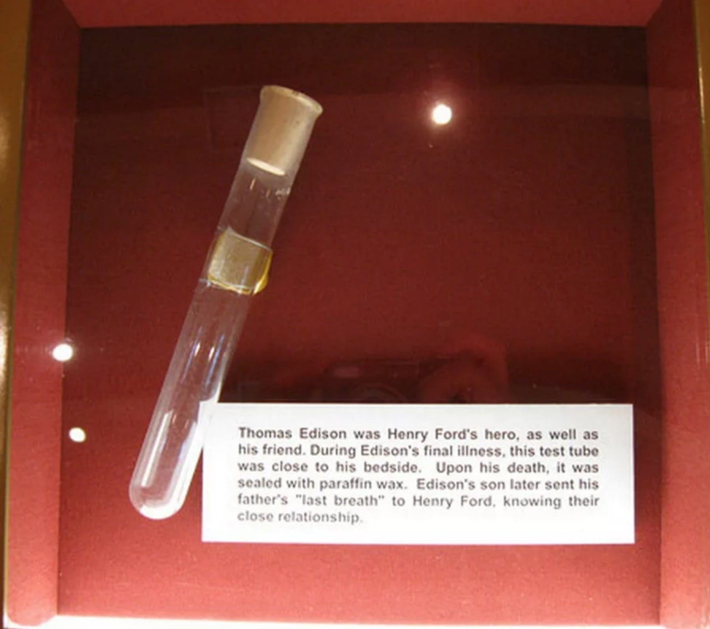

Последний выдох Томаса Эдисона. Знаменитый изобретатель умер в 1931 году из-за
осложнений от диабета. Генри Форд, который был очень дружен
с Эдисоном, подал его сыну идею держать над лицом мужчины
пробирку, чтобы собрать его последний выдох.
Сейчас эта пробирка находится в Музее Генри Форда в Детройте.